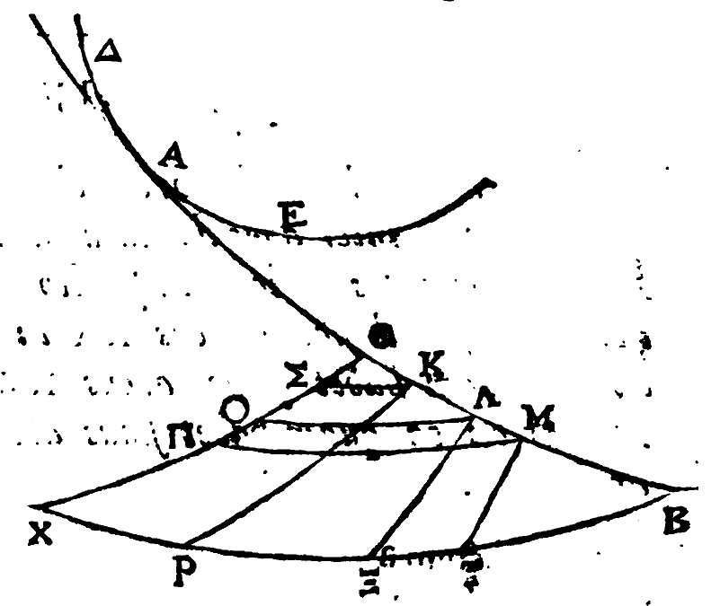

Prop. XIII. (Halley 1758, pp. 78–79)¶
Menelai Alexandrini Sphaericorum Lib. II Prop. XIII (Halley 1758, pp. 78–79)
Enuntiatio (Halley 1758, pp. 78–79)
Si in Sphaera fuerit circulus magnus quem contingat aliquis è circulis parallelis, & inter punctum contactûs & maximum parallelorum capiantur in eo duo arcus aequales, per quorum terminos ducantur circuli, quorum aliqui sint paralleli, aliqui vero circuli maximi qui
f. 0095 · p. 79

contingant unum eundemque è parallelis parallelo vero priori majorem; neque opus est ut sit inclinatio ejus ad easdem partes ad quas inclinat circulus ille primarius, in quo sumpsimus arcus aequales: tum circuli paralleli abscindent è circulis maximis ductis arcus inaequales, quorum minor erit qui propior est parallelorum maximo. Abscindent etiam iidem circuli magni è maximo parallelorum arcus inaequales, quorum qui propior est communi circuli magni primarii & maximi parallelorum intersectioni, minor erit remotiore ab eadem.
Tangat enim circulum maximum ΑΒ circulus aliquis è parallelis unus, qui sit ΑΔΕ; maximus autem parallelorum sit ΒΞΧ, & in arcu ΑΒ capiantur duo arcus aequales ΘΚ, ΛΜ; per quorum terminos describantur circuli paralleli ΚΣ, ΛΟ, ΜΠ, aliique circuli maximi ΘΧ, ΚΡ, ΛΞ, ΜΤ, quos omnes contingat idem circulus parallelus circulo ΑΔΕ major: dico quod arcus ΠO minor est arcu ΣΘ, quodque arcus ΤΞ minor est quam ΧΡ.
Quoniam enim in triangulo ΘΒΧ latus ΧΘ majus est latere ΘΒ, at non majus quadrante circuli, & in arcu ΒΘ sumuntur duo arcus aequales ΘΚ, ΛΜ, à quibus ducuntur arcus ΚΡ, ΛΞ, ΜΤ, continentes cum basi angulos aequales angulo apud Χ iisdem relativo; erit arcus ΧΡ (per 9m II. hujus) major arcu ΞΤ; itemque arcus ΘΧ, ΜΤ simul sumpti (per demonstrata in 7ma II. hujus) majores erunt arcubus intermediis ΚΡ, ΛΞ: quare duo arcus ΘΧ, ΧΠ simul sumpti sunt majores duobus ΣΧ, ΧΟ simul sumptis: unde constabit arcum ΘΣ majorem esse arcu ΟΠ. Et ex praecedentibus manifestum est quomodo consequatur conversa hujus.